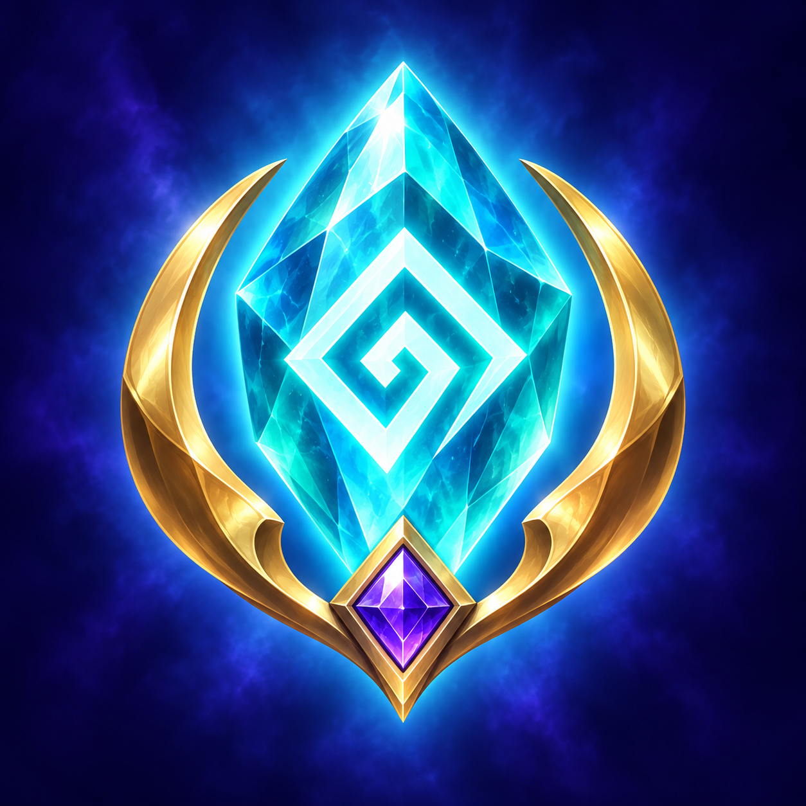
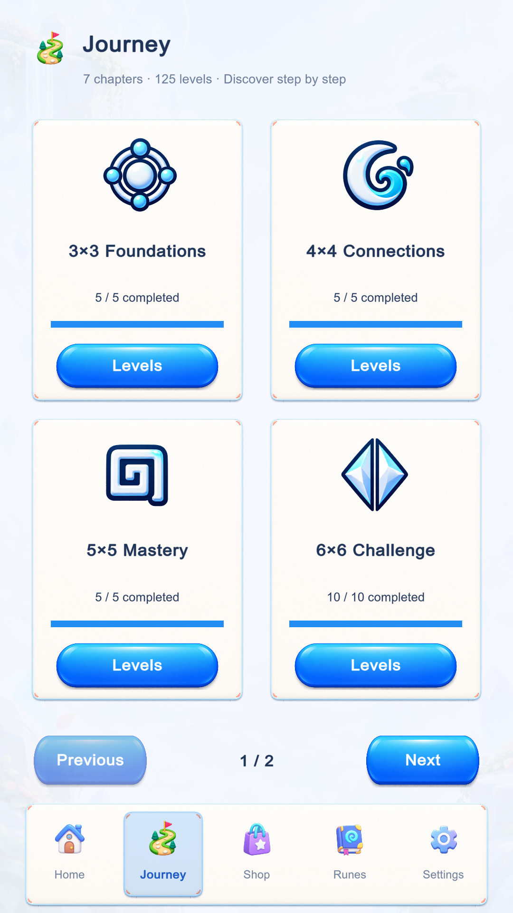
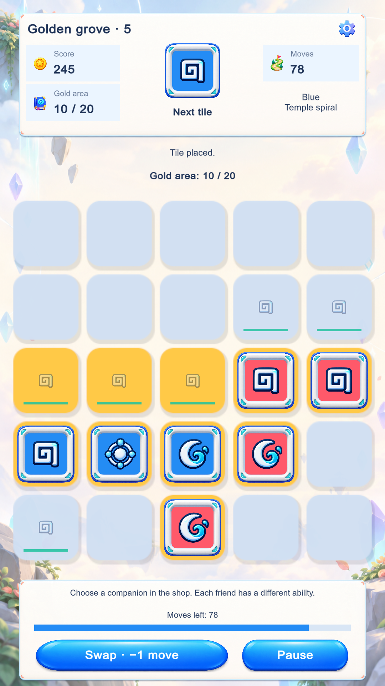

Rünler ve temalar
Rün koleksiyonunu keşfet, tahtanın görünümünü temalarla değiştir.
ŞİMDİ GOOGLE PLAY’DE

PROJECT RUNEBir taşla başla. Renkleri ve sembolleri buluştur, altın çizgileri tamamla. Küçük bir tahtadan, keşfedilecek bir dünyaya.
Android · Ücretsiz indir · Reklamlar ve uygulama içi satın almalar içerir.

Yerleştir.Renkleri ve sembolleri oku.
Tamamla.Altın çizgilere giden yolu bul.
Keşfet.Yeni adalara, yeni bulmacalara.
OYUNUN İÇİNDEN / 01
İlk adımlarını Yolculuk’ta at, Klasik’te kendi ritmini bul veya Bulmaca Adaları’nda yeni bir hedefe odaklan. Günlük Bulmaca, yeniden uğramak için başka bir neden.

Farklı boyutlardaki tahtalarla adım adım ilerle. Etkileşimli başlangıç eğitimiyle ilk hamleni öğren.

Klasik modda sıradaki rüne yer aç. Tahtayı oku, seçeneklerini değerlendir ve altın çizgileri tamamla.

Bulmaca Adaları’nda hamlelerini planla. Farklı tahtalarda hedef alanları tamamla ve yeni yollar keşfet.
Görseller oyundan alınmıştır. Ekran dili ve görünüm, seçtiğin ayarlara ve sürüme göre değişebilir.
KENDİ DÜNYANI KUR / 02
Rün koleksiyonunu keşfet, tahtanın görünümünü temalarla değiştir.
Farklı yetenekleri olan yoldaşları tanı ve oyununa eşlik edecek dostunu seç.
Rün puanlarıyla açılan içerikleri ve isteğe bağlı Google Play ürünlerini mağazada incele.
BİLMEN GEREKENLER / 03
Project Rune, Android için Google Play’de. Bu sayfadaki indirme düğmeleri seni doğrudan oyunun mağaza sayfasına götürür.
Oyun ücretsiz indirilebilir. Reklamlar ve isteğe bağlı tek seferlik satın almalar içerir. Yerel fiyatları ve ürün ayrıntılarını oyun içi mağazada görebilirsin.
Oyun sürümünü, telefon modelini ve soruna giden adımları paylaş: redbloodsupport@gmail.com.
PROJECT RUNE · ANDROID